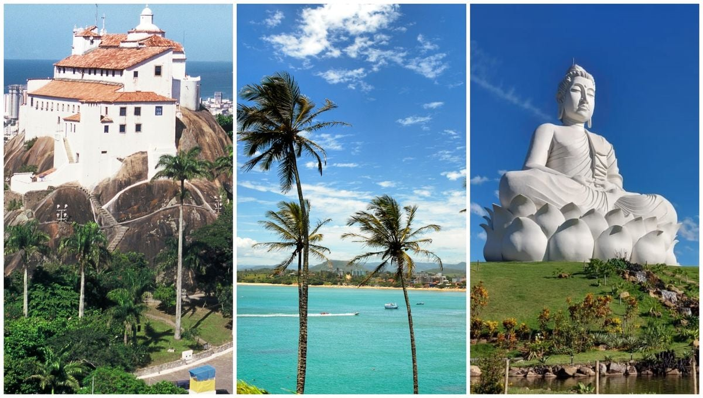

Conhecendo a cidade de vitória.
Assista o vídeo a seguir para conhecer a capital do estado capixaba.
Vídeo Turístico

O Convento da Penha e o Buda Gigante de Ibiraçu
A essência da espiritualidade, da cultura e do turismo no Espírito Santo. Separados por menos de 70 quilômetros,
esses dois monumentos traduzem como o estado acolhe e harmoniza diferentes crenças e tradições em meio à paisagem
natural capixaba.
O Convento da Penha: Fé e História no Alto do Penedo
Localizado em Vila Velha, o Convento de Nossa Senhora da Penha é um dos santuários religiosos
mais antigos do Brasil, fundado no século XVI pelo frei Pedro Palácios. Erguido no topo de um penhasco de 154 metros de altura,
cercado pela Mata Atlântica e com vista panorâmica para a baía de Vitória,
o complexo atrai milhões de fiéis e visitantes todos os anos.
Clique aqui para baixar o arquivo do GUIA em
Clique aqui para baixar o arquivo do GUIA em